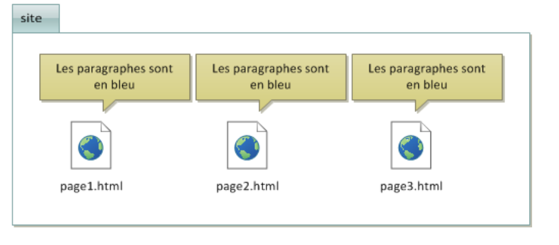
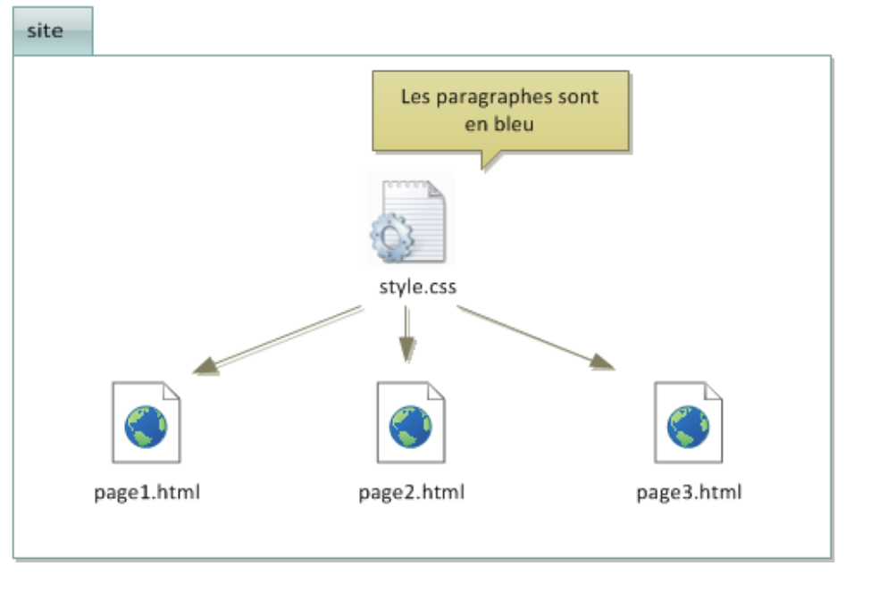
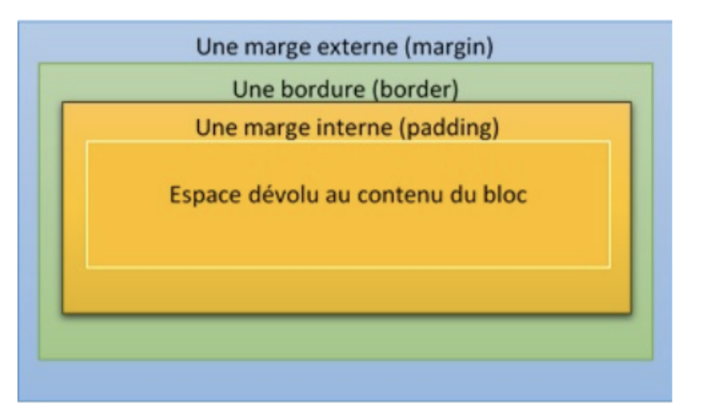

Nous consultons tous les jours des sites Web. Pour les sites les plus connus, on peuts’apercevoir que l’affichage et les fonctionnalités sont identiques quel que soit le navigateur utilisé (ce n’est pas toujours le cas pour des sites moins connus) à quelques détails près.
Les pages Web sont créées à l’aide de langages informatiques. Le respect des règles définiespour ces langages permet de créer des pages WEB qui pourront être lues correctement quel que soit le navigateur.
Pour créer la page Web visualisée, ont été utilisés les langages HTML et CSS. Le langage HTML a été créé en 1991 par Tim Berners-Lee. Ce dernier a aussi créé le World Wide WebConsortium (W3C) qui définit les nouvelles versions et les standards des langages liés au Web.
See the Pen FirstPage by eric (@ga78523) on CodePen.
Le langage HTML (HyperText Markup Language) permet de concevoir des documents Web. Ce langage de programmation descriptif est composé d'éléments. Un élément HTML est composé d'une balise ouvrante et d'une balise fermante afin de délimiter la zone de texte concernée par l'élément en question.
Par exemple, l'élément p, que nous avons utilisé délimite un paragraphe de texte, a pour balise ouvrante <p> et pour balise fermante </p>. Il y a également la balise <!DOCTYPE html>. Le doctype (pour Document Type Declaration) permet de renseigner le navigateur Web sur la version de HTML utilisée par le document Web. Le doctype utilisé dans l'exemple fait référence à HTML5. Un fichier HTML est composé de deux parties.
<head> et </head> : les éléments contenus dans l'entête n'ont pas vocation à être affichés sauf l'élément title dont le contenu apparaît dans l'onglet du navigateur Web. Les informations contenues dans l'entête renseignent sur l'auteur et le contenu du document.
<body> et </body>: l'ensemble des informations contenues entre ces balises sont affichées dans la fenêtre du navigateur Web.
See the Pen SecondPage by eric (@ga78523) on CodePen.
Vous avez remarqué que si nous voulons donner une unité au site, il est nécessaire, pour chaque page, de définir par exemple une police bleue.
Or, nous pouvons aussi utiliser une page de style écrite dans un autre langage: le CSS. Le Langage CSS, apparu en 1996, est complémentaire du langage HTML et permet de gérer la mise en forme (l'apparence) des différentes pages d’un site Web (couleur du texte, police, taille du texte, bordures, fond...)
Ainsi, dans l’exemple précédent, il suffit de créer une page style.css (avec Visual StudioCode par exemple) dans laquelle il écrit que les paragraphes sont en bleu. Toutes les pages html créées appelleront style.css dans l’en-tête (head) de la page grâce à l’instruction : <link href="style.css" rel="stylesheet" type="text /css">
Ici, on indique que l’élément p (paragraphe) contient du texte aligné des deux côtés (justifié) et de couleur bleue. On indique également que l’élément body (corps de la page HTML) aura un fond d’écran couleur gainsboro c’est-à-dire bleu très clair.
En CSS:
Dans le modèle des feuilles de style, tous les éléments d’une page HTML se coulent dans des blocs (ou «boites») rectangulaires. Un bloc typique est représenté ci-dessous :
A partir de l’extérieur, on rencontre successivement 4 zones:
De nombreuses propriétés CSS indiquent des longueurs (taille d’une bordure, d’un ajustement, taille des polices). Leur valeur est toujours un nombre suivi d’une unité. Parmi les unités légales en CSS, on retrouve notamment le pixel (px) et le point (pt). Nous donnons ci-dessous quelques propriétés CSS.
| Propriété | Valeur | Description |
|---|---|---|
| display | None, block ou inline | mode d’affichage de la boîte |
| Background | couleur | couleur de fond de la boîte |
| color | couleur | couleur de texte |
| border | taille motif couleur ou none | Si none, la bordure est masquée. Sinon, on donne la taille, le motif (solid, dotted oudashed) et la couleur séparés par des espaces. |
| margin | longueur | taille des marges |
| padding | longueur | taille des ajustements |
| text-decoration | none, underline, overline, ouline-through | décoration du texte |
| text-align | left, right, ou justify | justification du texte |
| font-family | fixed, serif, ou sans serif | justification du texte |
| font-weight | normal, light, bold, ou bolder | graisse de la police |
| font-style | normal ou italic | style de la police |
| font-size | Longueur ou xx-small, x-small,small, normal, large, x-large,xx-large | taille de la police |